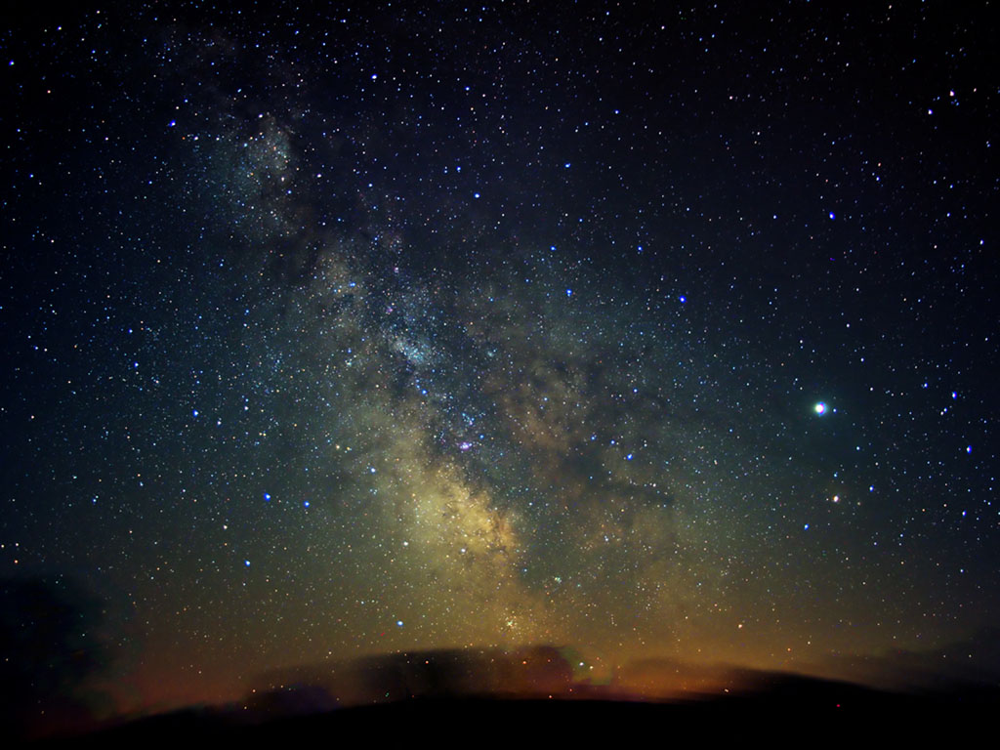
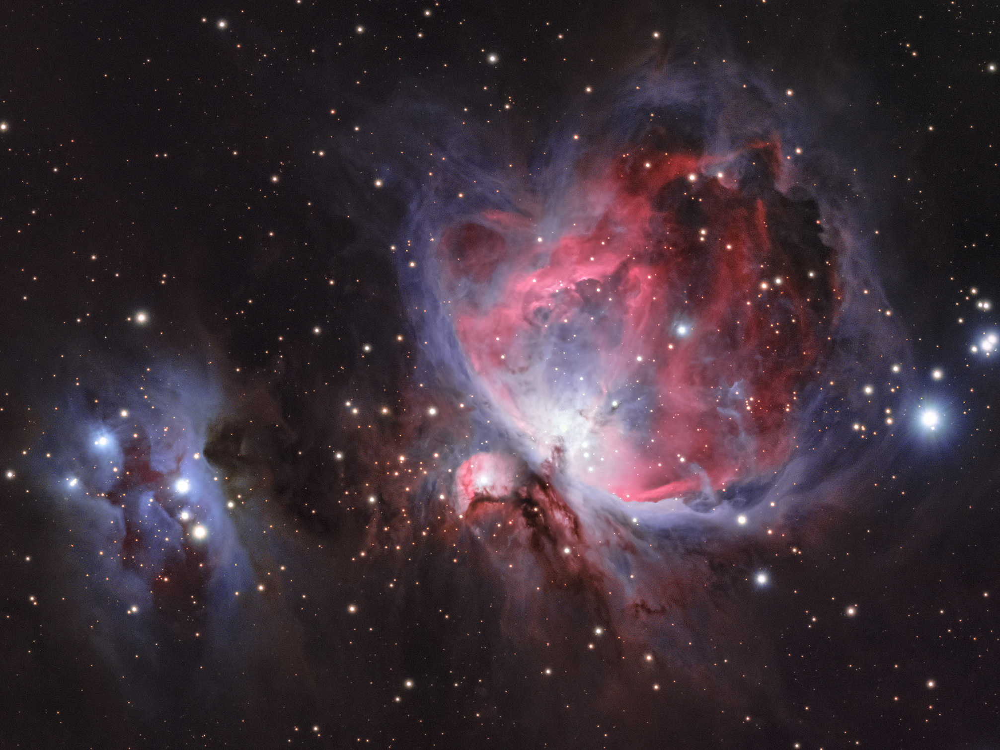
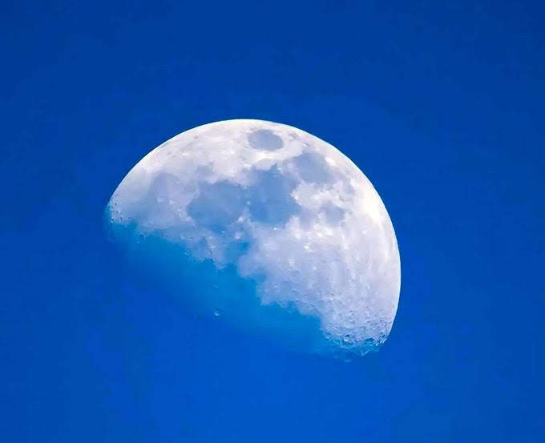
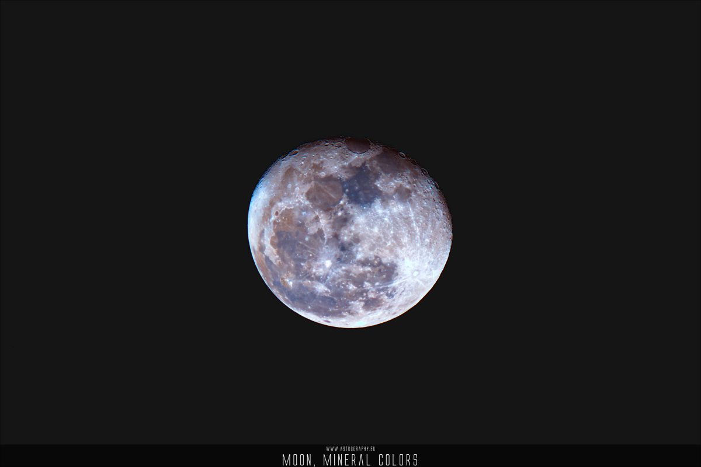
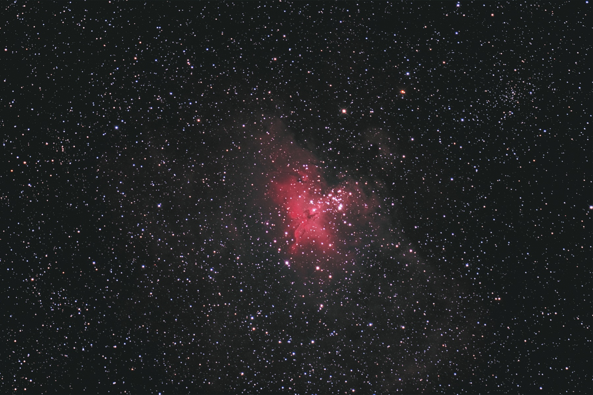
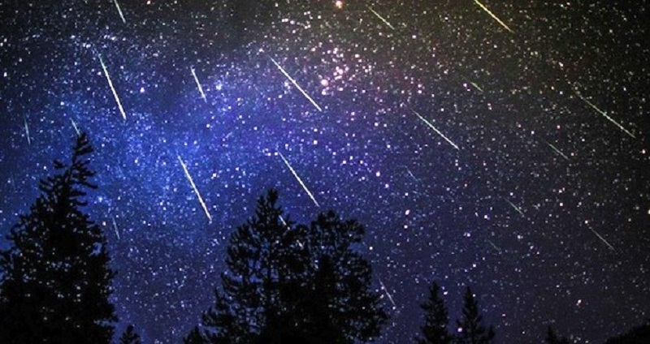
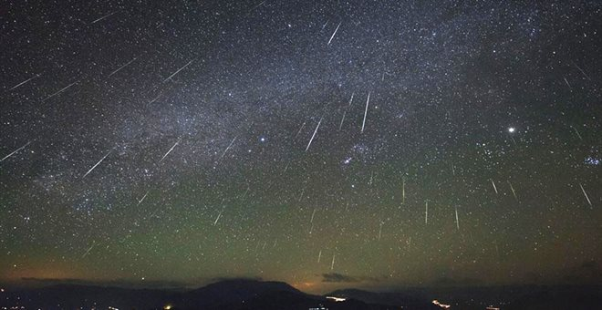
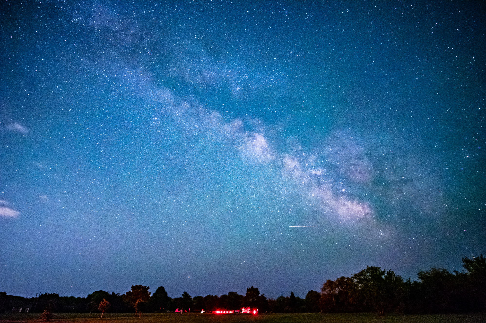
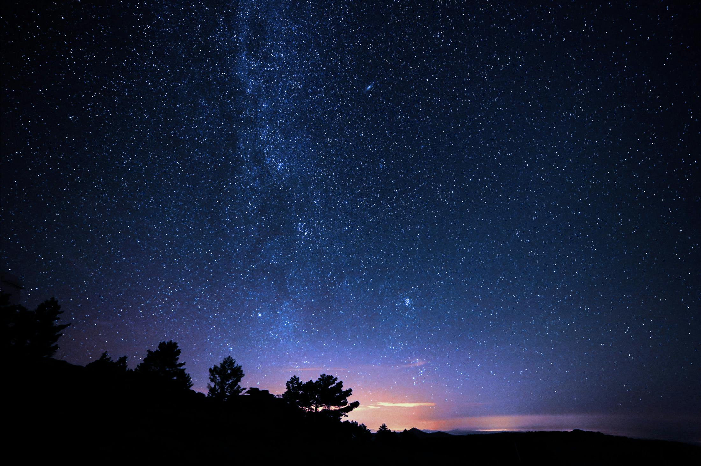

Csillagok és csillagképek
A csillagok olyan hatalmas, forró, gázokból és plazmából álló égitestek, amelyek
saját fényt bocsátanak ki a termonukleáris reakciók során.
A csillagképek olyan csoportok vagy alakzatok, amelyeket a csillagok képeznek az égbolton,
és hagyományosan nevezzük őket egy adott formához vagy történethez kapcsolódóan.


Holdak és bolygók
Holdnak nevezzük a bolygók, törpebolygók és kisbolygók körül keringő égitesteket.
A bolygók olyan égitestek, amelyek közvetlenül a Nap körül keringenek,
és a Nap fényét visszatükrözik.


Galaxisok és ködök
A galaxisok hatalmas csillagrendszerek, amelyek milliárdnyi csillagból,
gázokból, porból és sötét anyagból állnak.
A ködök olyan felhők, amelyek
gázokból és porból állnak, és a csillagok körül vagy a galaxisok között találhatók.
A ködök lehetnek bolygóködök, csillagködök vagy galaxisködök.


Meteorok és meteorzáporok
A meteorok apró aszteroidák vagy üstökösökből származó részecskék,
amelyek belépnek a Föld légkörébe,
és fényes nyomot hagynak maguk után. Ezt nevezzük "csillaghullásnak".
A meteorzáporok az égbolt olyan eseményei, amikor a Föld áthalad
egy aszteroida vagy üstökös porszemcsék sűrű felhőjén,
és nagy számban megjelennek a meteorok.


Asztrofotós tájképek
Az asztrofotós tájképek olyan képek, amelyek az éjszakai égboltot és
az éjszakai tájat ötvözik művészi módon.


Asztrofotós timelapsek
A "timelapse" egy olyan filmmódszer, amely során
egy lassú időbeli folyamatot gyorsított sebességgel mutatnak be.